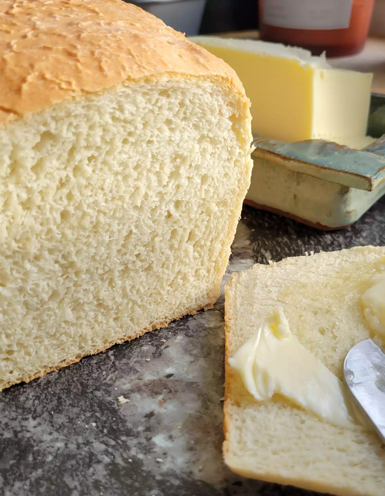

Traditional White Bread

Description
This is a recipe for a traditional white bread with a light center and crunchy crust, as originally found on allrecipes.com. Feel free to substitute butter or vegetable oil for the lard, or a dairy free butter substitute if going pure vegan.
Ingredients
- 2 (.25 ounce) packages active dry yeast
- 3 tablespoons white sugar
- 2-1/2 cups warm water (110 degrees F/45 degrees C)
- 6-1/2 cups bread flour
- 3 tablespoons lard, softened
- 1 tablespoon salt
Steps
- Dissolve yeast and sugar in warm water in a large bowl. Stir in 2 cups flour, lard, and salt. Stir in the remaining flour, 1/2 cup at a time, mixing well after each addition. When the dough comes together, turn it out onto a lightly floured surface and knead until smooth and elastic, about 8 minutes.
- Lightly oil a large bowl, then place the dough in the bowl and turn to coat with oil. Cover with a damp cloth and let rise in a warm place until doubled in volume, about 1 hour.
- Lightly grease two 9x5-inch loaf pans.
- Deflate the dough and turn it out onto a lightly floured surface. Divide the dough into two equal pieces and form into loaves. Place the loaves into the prepared pans, cover with a damp cloth, and let rise until doubled in volume, about 40 minutes.
- Preheat the oven to 425 degrees F (220 degrees C).
- Place bread in the preheated oven and lower the temperature to 375 degrees F (190 degrees C). Bake until the top is golden brown and the bottom of the loaf sounds hollow when tapped, about 30 minutes.